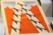
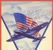

| Teaching |
| 670 S '07 |
| Projects |
| Presentations |
| Programming |
| Squadron Scramble |
| Aircrafts |
| Project 1 |
| Project 2 |
| Project 3 |
| Project 4 |
| Project 5 |
| Project 6 |
| Project 7 |
| Project 8 |
| Project 9 |
| Project 10 |
| Project 11 |
| Project 12 |
| Project 13 |
Squadron Scramble
Squadron Scramble is a card game from the World War II era. Restoration Hardware resurrected the game a couple of years ago, which is where I bought it for my sons.
The objective of the game is to conduct an "air war" with the Axis and Allies fighters and bombers depicted on the playing card. Naturally, each "war" consists of "battles." A player earns points in each battle until some player has won the "war."
Note: I modified the rules of the game a bit for this course. My purpose is to drive home some points concerning interactions among software components. You may want to consult the rules for the original game and even play it to get a feeling for the process but keep in mind that the rules differ.
The CardsThe deck includes airplane types from all major Axis and Allies nations [see "Aircrafts" tab on the left], e.g.,
There are three cards for each airplane type in the deck.
Northrop A-17a (US) Do 26 (German) Mitsubishi 96 (Japan)
![[a17]](SquadronScramble/Northrop A-17a.jpg)
![[do26]](SquadronScramble/Dornier Do 26.jpg)
![[p47]](SquadronScramble/Mitsubishi 96.jpg)
In addition to airplane cards, the deck contains one "Victory" card and six "Keep'em Flying" cards:
All seven of them may be used as wild cards. How to Conduct a Battle
  Victory Card Keep'em Flying Card
At the beginning of a battle, the dealer shuffles, the deck and then hands each player seven cards. The rest of the deck is placed faced-down. The top-most card is turned over (face-up), visible to all.
A randomly chosen player starts the battle. The remaining player get turns in a clock-wise fashion.
When it is a player's turn, the player must take exactly one card from the face-down deck or at least one card from the face-up stack. At the end of the turn, the player must return one card, face-up to the top of the face-up deck, unless the player has put all cards on his hand on the table and has thus finished the battle.
Q: What happens when the deck or discard pile runs out during play? A: The "return one card" rule implies that there is always at least one card on the stack. It is possible, however, that the deck is exhausted after some number of turns. In this case, your game administrator will turn the discard stack into a deck, shuffle it, and use the top-most card as the new stack. Question: is it still possible for a battle to run forever? Is this question decidable? [What does this mean?]
A squadron consists of three cards for the same airplane type or two cards for the same type plus one wild card or of one aircraft card plus two wild cards. If a player has complete squadrons on his hand, he may put them all down (face-up). As the player discards squadrons, he may use a complete Axis [Allies] squadron of fighters to shoot down exactly one Allies [Axis] squadron of bombers that some other player has already put on the table. The cards become his and can't change owner anymore.
When a player has put down all cards in his possession, the battle is over. A battle is also over if the deck is empty and there are fewer than three cards left on the stack.
Scoring a Battle, ...When a battle has ended, each player receives fifteen (15) points for a fighter squadron on the table and thirty (30) points for a bomber squadron, including those shot down from other players. Every player must then subtract five points (5) per fighter card and ten (10) points per bomber card on his hand. The wild cards on a player's hand cause no penalty.
Q: Can a player have a negative score? A: Yes.
..., Winning a WarQ: How many players may participate? When may they start participation? A: For a physical game, the rules recommend two to six players. For a virtual game, you shouldn't set such arbitrary limits. [Or should you?] Naturally, once a game has started, no additional players may join.
The war is over when at least one player has collected at least 250 points at the end of some battle. The player with the most points is the winner. [A mathematician would ask at this point whether anything in this set-up guarantees that there is a winner; a software engineer should ask similar questions.]